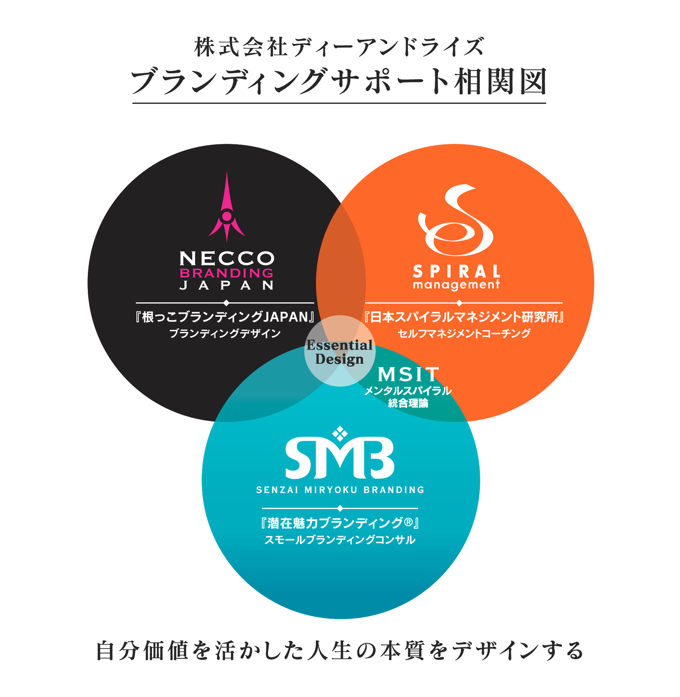

入口を整理
個人向け、法人向け、講座向けの入口を明確に分けます。
Branding support
ブランディングデザイン、セルフマネジメント、潜在魅力ブランディングを統合して、訪問者に迷わせない構成へ。

Structure
既存素材の相関図を活かしながら、Web上では「誰に、何を、どの順番で伝えるか」を再設計します。初見でも事業の全体像がつかめるページにします。
個人向け、法人向け、講座向けの入口を明確に分けます。
サービス名だけでなく、得られる変化まで言語化します。
各ページから問い合わせ、説明会、資料請求へ自然につなげます。